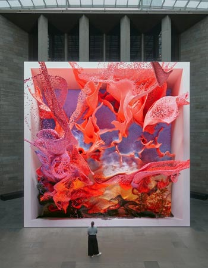

Para Anadol, la inteligencia artificial no reemplaza al artista, sino que funciona como un
"colaborador inteligente". Su proceso comienza con la recopilación de millones de datos
—desde registros climáticos hasta archivos históricos de museos— que luego son procesados
por redes neuronales.
Este enfoque permite al artista visualizar lo invisible, transformando procesos abstractos
en paisajes fluidos que invitan a reflexionar sobre la creatividad y el rol de las máquinas
en la producción cultural.
La memoria como material
Uno de los temas recurrentes en su obra es la memoria, tanto individual como colectiva.
A través del uso de datos, Anadol explora cómo los recuerdos pueden representarse,
transformarse y reinterpretarse mediante procesos digitales.
Los datos convertidos en paisajes fluidos.

Interpretación abstracta de la memoria colectiva.
Las visualizaciones que produce funcionan como interpretaciones abstractas donde los datos
se convierten en entornos dinámicos. Este enfoque permite conectar la tecnología con
experiencias humanas profundas.
Obras y Proyectos Destacados
A continuación, se mencionan algunas de las series más importantes del artista:
Machine Hallucinations: Exploración de la memoria visual colectiva.
Melting Memories: Visualización de la actividad cerebral y el recuerdo.
Archive Dreaming: Una instalación inmersiva basada en millones de documentos históricos.